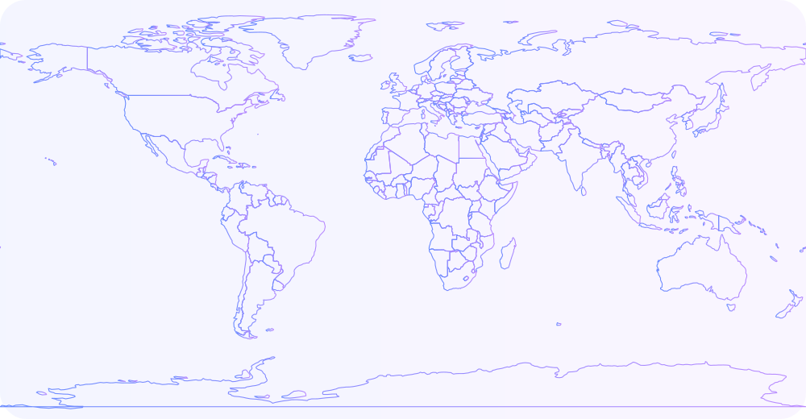

Projects
Things I've shipped or tinkered with recently.
About
I enjoy working on backend systems that are reliable, observable, and easy to understand. My interests include distributed systems, data engineering, and applied machine learning, with a focus on how data moves through systems, how services communicate, and how to keep software predictable as it scales.
Right now I am deepening my skills in systems design, ML deployment, and production readiness, with a particular interest in stream processing, service coordination, and understanding performance and failure behavior in real environments.
Outside of work I travel, read, explore new food and coffee spots, shoot film, and hike with my dog. I like learning continuously and pulling ideas from different places and disciplines.
Travel
Places I've explored and photographed.
